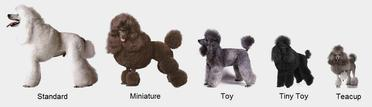

Find out more about the Poodle here

Temperament: Active, Proud, Very Smart
Breed Information
- AKC Breed Popularity: Ranks 7 of 196
- Height: Over 15 inches (standard)
- Weight: 60-70 pounds (male), 40-50 pounds (female)
- Life Expectancy: 10-18 years
Poodles come in three size varieties:
- Standards should be more than 15 inches tall at the shoulder
- Miniatures are 15 inches or under
- Toys stand no more than 10 inches
All three varieties have the same build and proportions.
At dog shows, Poodles are usually seen in the elaborate Continental Clip.
Most pet owners prefer the simpler Sporting Clip, in which the
coat is shorn to follow the outline of the squarely built, smoothly muscled body.